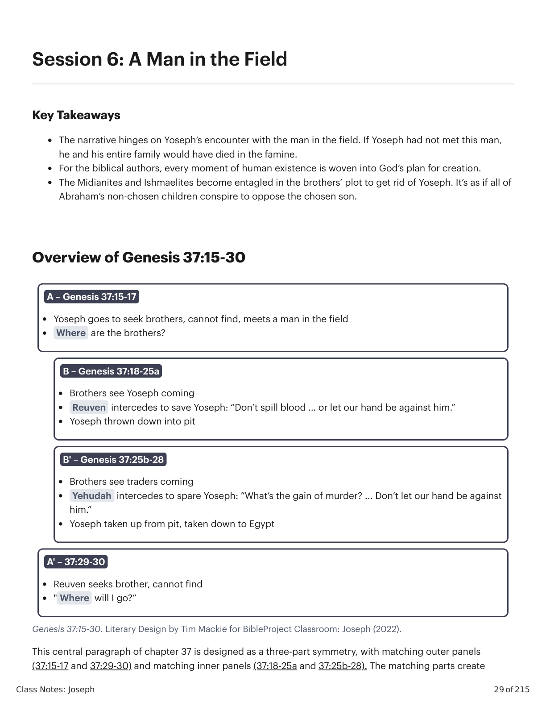
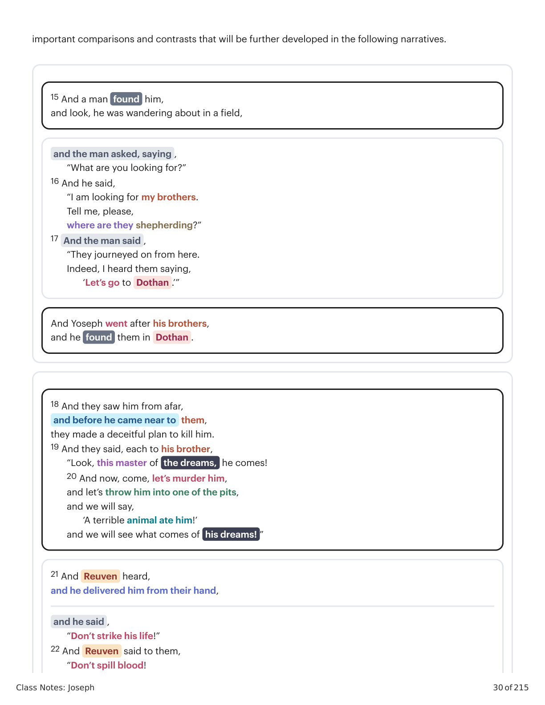
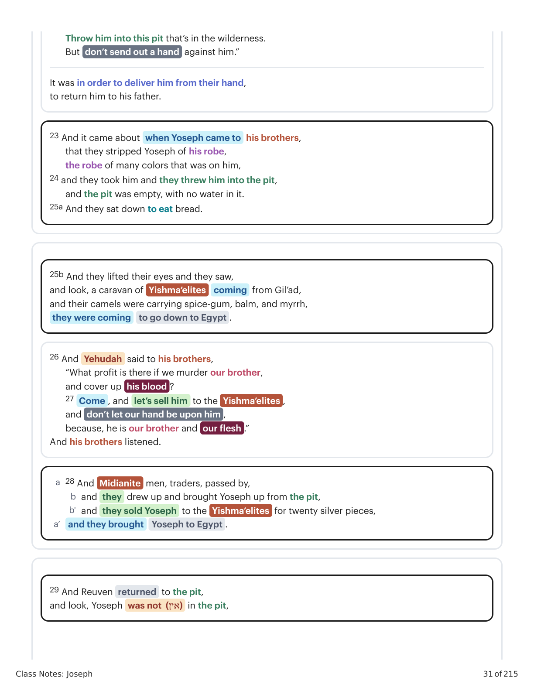
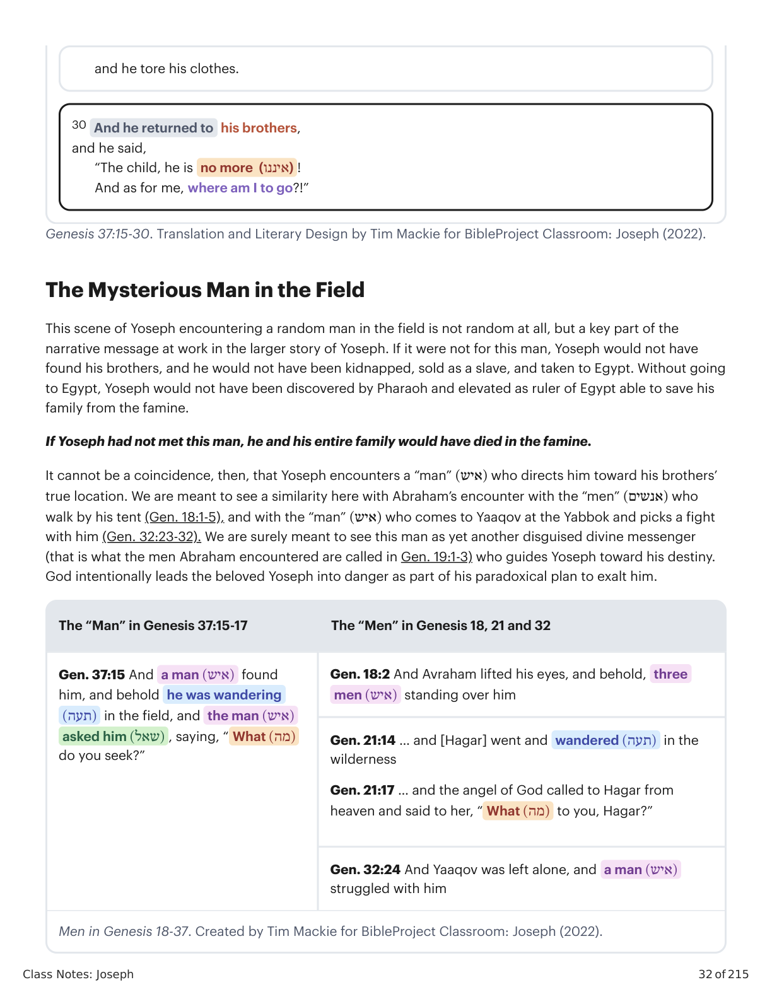
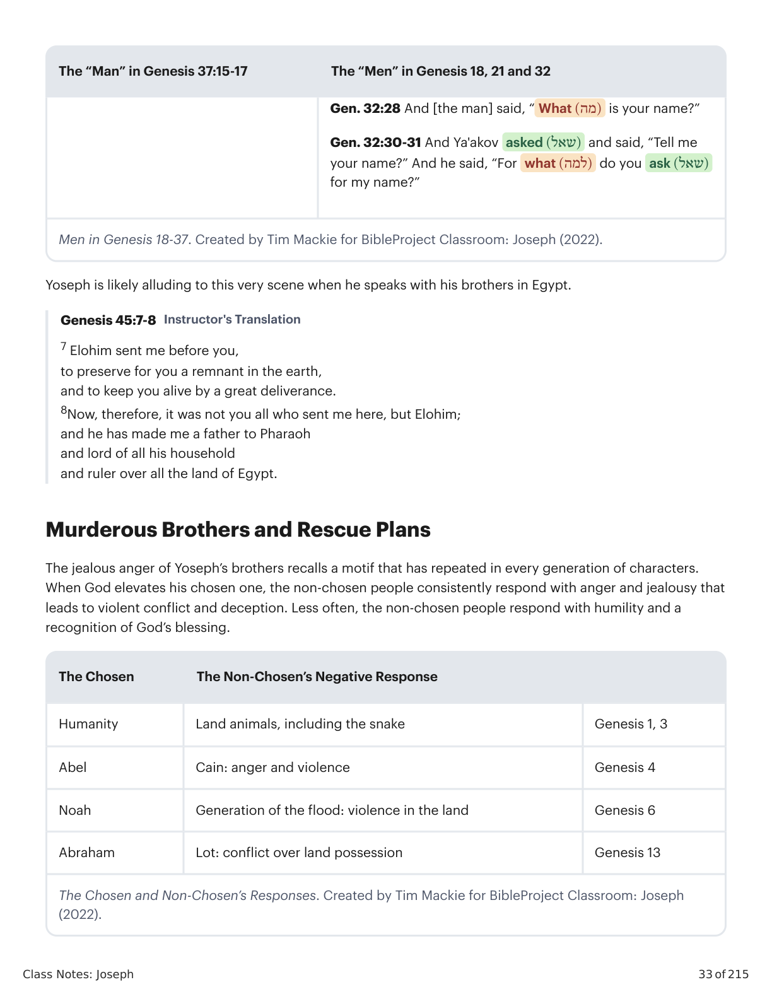
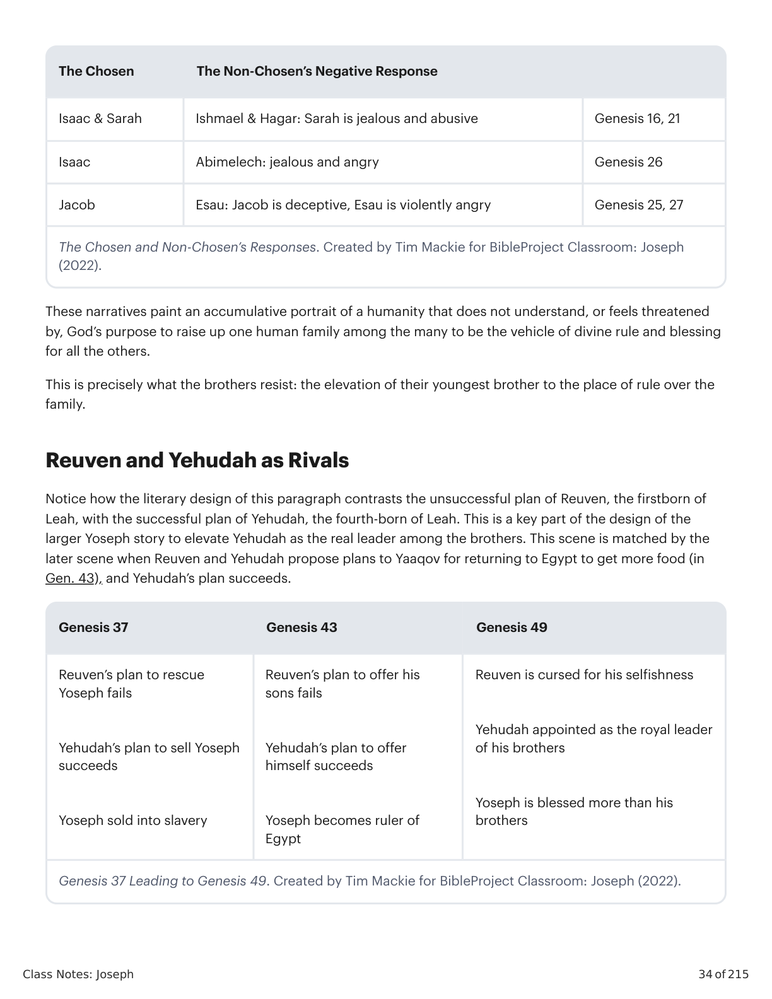
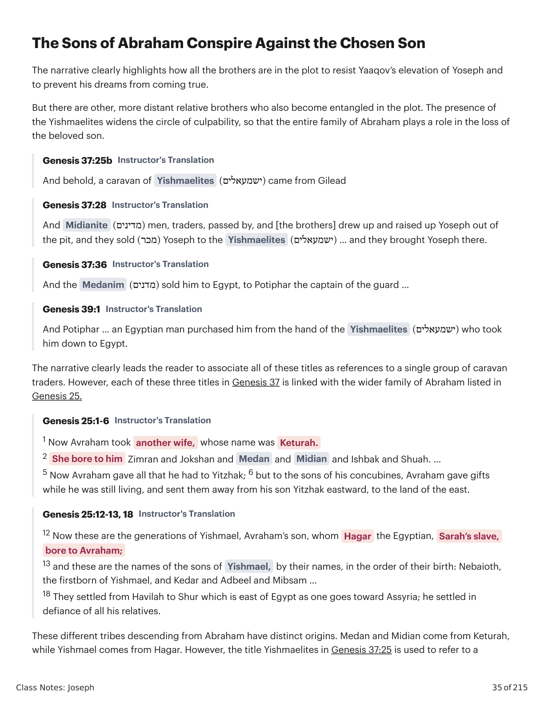
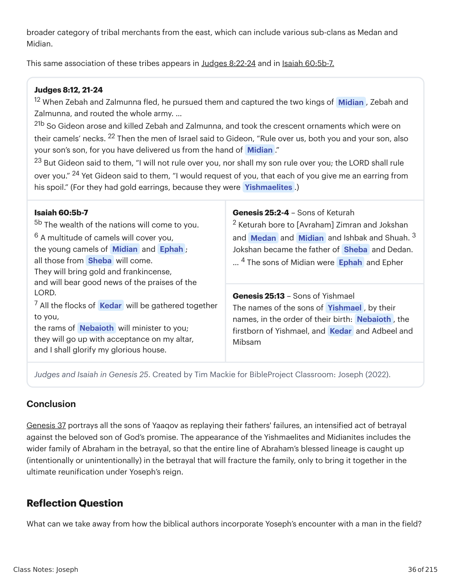

Um Homem no CampoA Man in the Field
\n
\n
Class Notes: Joseph
29 of 215
Session 6: A Man in the Field
Key Takeaways
The narrative hinges on Yoseph’s encounter with the man in the field. If Yoseph had not met this man,
he and his entire family would have died in the famine.
For the biblical authors, every moment of human existence is woven into God’s plan for creation.
The Midianites and Ishmaelites become entagled in the brothers’ plot to get rid of Yoseph. It’s as if all of
Abraham’s non-chosen children conspire to oppose the chosen son.
Overview of Genesis 37:15-30
Genesis 37:15-30. Literary Design by Tim Mackie for BibleProject Classroom: Joseph (2022).
This central paragraph of chapter 37 is designed as a three-part symmetry, with matching outer panels
(37:15-17 and 37:29-30) and matching inner panels (37:18-25a and 37:25b-28). The matching parts create
A – Genesis 37:15-17
Yoseph goes to seek brothers, cannot find, meets a man in the field
Where are the brothers?
B – Genesis 37:18-25a
Brothers see Yoseph coming
Reuven intercedes to save Yoseph: “Don’t spill blood … or let our hand be against him.”
Yoseph thrown down into pit
B' – Genesis 37:25b-28
Brothers see traders coming
Yehudah intercedes to spare Yoseph: “What’s the gain of murder? ... Don’t let our hand be against
him.”
Yoseph taken up from pit, taken down to Egypt
A' – 37:29-30
Reuven seeks brother, cannot find
" Where will I go?”
\n

Gênesis X:Y. Tradução e Design Literário por Tim Mackie para BibleProject Classroom: José (2021).Genesis X:Y. Translation and Literary Design by Tim Mackie for BibleProject Classroom: Joseph (2021).
\n
Class Notes: Joseph
30 of 215
important comparisons and contrasts that will be further developed in the following narratives.
15 And a man found him,
and look, he was wandering about in a field,
and the man asked, saying ,
“What are you looking for?”
16 And he said,
“I am looking for my brothers.
Tell me, please,
where are they shepherding?”
17 And the man said ,
“They journeyed on from here.
Indeed, I heard them saying,
‘Let’s go to Dothan .’”
And Yoseph went after his brothers,
and he found them in Dothan .
18 And they saw him from afar,
and before he came near to them,
they made a deceitful plan to kill him.
19 And they said, each to his brother,
“Look, this master of the dreams, he comes!
20 And now, come, let’s murder him,
and let’s throw him into one of the pits,
and we will say,
‘A terrible animal ate him!’
and we will see what comes of his dreams! ”
21 And Reuven heard,
and he delivered him from their hand,
and he said ,
“Don’t strike his life!”
22 And Reuven said to them,
“Don’t spill blood!
\n

Gênesis X:Y. Tradução e Design Literário por Tim Mackie para BibleProject Classroom: José (2021).Genesis X:Y. Translation and Literary Design by Tim Mackie for BibleProject Classroom: Joseph (2021).
\n
Class Notes: Joseph
31 of 215
Throw him into this pit that’s in the wilderness.
But don’t send out a hand against him.”
It was in order to deliver him from their hand,
to return him to his father.
23 And it came about when Yoseph came to his brothers,
that they stripped Yoseph of his robe,
the robe of many colors that was on him,
24 and they took him and they threw him into the pit,
and the pit was empty, with no water in it.
25a And they sat down to eat bread.
25b And they lifted their eyes and they saw,
and look, a caravan of Yishma’elites
coming from Gil’ad,
and their camels were carrying spice-gum, balm, and myrrh,
they were coming
to go down to Egypt .
26 And Yehudah said to his brothers,
“What profit is there if we murder our brother,
and cover up his blood ?
27 Come , and let’s sell him to the Yishma’elites ,
and don’t let our hand be upon him ,
because, he is our brother and our flesh .”
And his brothers listened.
28 And Midianite men, traders, passed by,
a
and they drew up and brought Yoseph up from the pit,
b
and they sold Yoseph to the Yishma’elites for twenty silver pieces,
b'
and they brought
Yoseph to Egypt .
a’
29 And Reuven returned to the pit,
and look, Yoseph was not (אין) in the pit,
\n

Gênesis X:Y. Tradução e Design Literário por Tim Mackie para BibleProject Classroom: José (2021).Genesis X:Y. Translation and Literary Design by Tim Mackie for BibleProject Classroom: Joseph (2021).
\n
Class Notes: Joseph
32 of 215
Genesis 37:15-30. Translation and Literary Design by Tim Mackie for BibleProject Classroom: Joseph (2022).
The Mysterious Man in the Field
This scene of Yoseph encountering a random man in the field is not random at all, but a key part of the
narrative message at work in the larger story of Yoseph. If it were not for this man, Yoseph would not have
found his brothers, and he would not have been kidnapped, sold as a slave, and taken to Egypt. Without going
to Egypt, Yoseph would not have been discovered by Pharaoh and elevated as ruler of Egypt able to save his
family from the famine.
If Yoseph had not met this man, he and his entire family would have died in the famine.
It cannot be a coincidence, then, that Yoseph encounters a “man” )(איש who directs him toward his brothers’
true location. We are meant to see a similarity here with Abraham’s encounter with the “men” )(אנשים who
walk by his tent (Gen. 18:1-5), and with the “man” )(איש who comes to Yaaqov at the Yabbok and picks a fight
with him (Gen. 32:23-32). We are surely meant to see this man as yet another disguised divine messenger
(that is what the men Abraham encountered are called in Gen. 19:1-3) who guides Yoseph toward his destiny.
God intentionally leads the beloved Yoseph into danger as part of his paradoxical plan to exalt him.
The “Man” in Genesis 37:15-17
The “Men” in Genesis 18, 21 and 32
Gen. 37:15 And a man )(איש found
him, and behold he was wandering
)(תעה in the field, and the man )(איש
asked him )(שאל, saying, “ What )(מה
do you seek?”
Gen. 18:2 And Avraham lifted his eyes, and behold, three
men )(איש standing over him
Gen. 21:14 … and [Hagar] went and wandered )(תעה in the
wilderness
Gen. 21:17 … and the angel of God called to Hagar from
heaven and said to her, “ What )(מה to you, Hagar?”
Gen. 32:24 And Yaaqov was left alone, and a man )(איש
struggled with him
Men in Genesis 18-37. Created by Tim Mackie for BibleProject Classroom: Joseph (2022).
and he tore his clothes.
30 And he returned to his brothers,
and he said,
“The child, he is no more (איננו) !
And as for me, where am I to go?!”
\n

Gênesis X:Y. Tradução e Design Literário por Tim Mackie para BibleProject Classroom: José (2021).Genesis X:Y. Translation and Literary Design by Tim Mackie for BibleProject Classroom: Joseph (2021).
\n
Class Notes: Joseph
33 of 215
The “Man” in Genesis 37:15-17
The “Men” in Genesis 18, 21 and 32
Gen. 32:28 And [the man] said, “ What )(מה is your name?”
Gen. 32:30-31 And Ya'akov asked )(שאל and said, “Tell me
your name?” And he said, “For what )(למה do you ask )(שאל
for my name?”
Men in Genesis 18-37. Created by Tim Mackie for BibleProject Classroom: Joseph (2022).
Yoseph is likely alluding to this very scene when he speaks with his brothers in Egypt.
Genesis 45:7-8 Instructor's Translation
7 Elohim sent me before you,
to preserve for you a remnant in the earth,
and to keep you alive by a great deliverance.
8Now, therefore, it was not you all who sent me here, but Elohim;
and he has made me a father to Pharaoh
and lord of all his household
and ruler over all the land of Egypt.
Murderous Brothers and Rescue Plans
The jealous anger of Yoseph’s brothers recalls a motif that has repeated in every generation of characters.
When God elevates his chosen one, the non-chosen people consistently respond with anger and jealousy that
leads to violent conflict and deception. Less often, the non-chosen people respond with humility and a
recognition of God’s blessing.
The Chosen
The Non-Chosen’s Negative Response
Humanity
Land animals, including the snake
Genesis 1, 3
Abel
Cain: anger and violence
Genesis 4
Noah
Generation of the flood: violence in the land
Genesis 6
Abraham
Lot: conflict over land possession
Genesis 13
The Chosen and Non-Chosen’s Responses. Created by Tim Mackie for BibleProject Classroom: Joseph
(2022).
\n

Gênesis X:Y. Tradução e Design Literário por Tim Mackie para BibleProject Classroom: José (2021).Genesis X:Y. Translation and Literary Design by Tim Mackie for BibleProject Classroom: Joseph (2021).
\n
Class Notes: Joseph
34 of 215
The Chosen
The Non-Chosen’s Negative Response
Isaac & Sarah
Ishmael & Hagar: Sarah is jealous and abusive
Genesis 16, 21
Isaac
Abimelech: jealous and angry
Genesis 26
Jacob
Esau: Jacob is deceptive, Esau is violently angry
Genesis 25, 27
The Chosen and Non-Chosen’s Responses. Created by Tim Mackie for BibleProject Classroom: Joseph
(2022).
These narratives paint an accumulative portrait of a humanity that does not understand, or feels threatened
by, God’s purpose to raise up one human family among the many to be the vehicle of divine rule and blessing
for all the others.
This is precisely what the brothers resist: the elevation of their youngest brother to the place of rule over the
family.
Reuven and Yehudah as Rivals
Notice how the literary design of this paragraph contrasts the unsuccessful plan of Reuven, the firstborn of
Leah, with the successful plan of Yehudah, the fourth-born of Leah. This is a key part of the design of the
larger Yoseph story to elevate Yehudah as the real leader among the brothers. This scene is matched by the
later scene when Reuven and Yehudah propose plans to Yaaqov for returning to Egypt to get more food (in
Gen. 43), and Yehudah’s plan succeeds.
Genesis 37
Genesis 43
Genesis 49
Reuven’s plan to rescue
Yoseph fails
Yehudah’s plan to sell Yoseph
succeeds
Yoseph sold into slavery
Reuven’s plan to offer his
sons fails
Yehudah’s plan to offer
himself succeeds
Yoseph becomes ruler of
Egypt
Reuven is cursed for his selfishness
Yehudah appointed as the royal leader
of his brothers
Yoseph is blessed more than his
brothers
Genesis 37 Leading to Genesis 49. Created by Tim Mackie for BibleProject Classroom: Joseph (2022).
\n

Gênesis X:Y. Tradução e Design Literário por Tim Mackie para BibleProject Classroom: José (2021).Genesis X:Y. Translation and Literary Design by Tim Mackie for BibleProject Classroom: Joseph (2021).
\n
Class Notes: Joseph
35 of 215
The Sons of Abraham Conspire Against the Chosen Son
The narrative clearly highlights how all the brothers are in the plot to resist Yaaqov’s elevation of Yoseph and
to prevent his dreams from coming true.
But there are other, more distant relative brothers who also become entangled in the plot. The presence of
the Yishmaelites widens the circle of culpability, so that the entire family of Abraham plays a role in the loss of
the beloved son.
Genesis 37:25b Instructor's Translation
And behold, a caravan of Yishmaelites )(ישמעאלים came from Gilead
Genesis 37:28 Instructor's Translation
And Midianite )(מדינים men, traders, passed by, and [the brothers] drew up and raised up Yoseph out of
the pit, and they sold )(מכר Yoseph to the Yishmaelites )(ישמעאלים … and they brought Yoseph there.
Genesis 37:36 Instructor's Translation
And the Medanim )(מדנים sold him to Egypt, to Potiphar the captain of the guard …
Genesis 39:1 Instructor's Translation
And Potiphar … an Egyptian man purchased him from the hand of the Yishmaelites )(ישמעאלים who took
him down to Egypt.
The narrative clearly leads the reader to associate all of these titles as references to a single group of caravan
traders. However, each of these three titles in Genesis 37 is linked with the wider family of Abraham listed in
Genesis 25.
Genesis 25:1-6 Instructor's Translation
1 Now Avraham took another wife, whose name was Keturah.
2 She bore to him Zimran and Jokshan and Medan and Midian and Ishbak and Shuah. …
5 Now Avraham gave all that he had to Yitzhak; 6 but to the sons of his concubines, Avraham gave gifts
while he was still living, and sent them away from his son Yitzhak eastward, to the land of the east.
Genesis 25:12-13, 18 Instructor's Translation
12 Now these are the generations of Yishmael, Avraham’s son, whom Hagar the Egyptian, Sarah’s slave,
bore to Avraham;
13 and these are the names of the sons of Yishmael, by their names, in the order of their birth: Nebaioth,
the firstborn of Yishmael, and Kedar and Adbeel and Mibsam …
18 They settled from Havilah to Shur which is east of Egypt as one goes toward Assyria; he settled in
defiance of all his relatives.
These different tribes descending from Abraham have distinct origins. Medan and Midian come from Keturah,
while Yishmael comes from Hagar. However, the title Yishmaelites in Genesis 37:25 is used to refer to a
\n

Gênesis X:Y. Tradução e Design Literário por Tim Mackie para BibleProject Classroom: José (2021).Genesis X:Y. Translation and Literary Design by Tim Mackie for BibleProject Classroom: Joseph (2021).
\n
Class Notes: Joseph
36 of 215
broader category of tribal merchants from the east, which can include various sub-clans as Medan and
Midian.
This same association of these tribes appears in Judges 8:22-24 and in Isaiah 60:5b-7.
Judges 8:12, 21-24
12 When Zebah and Zalmunna fled, he pursued them and captured the two kings of Midian , Zebah and
Zalmunna, and routed the whole army. …
21b So Gideon arose and killed Zebah and Zalmunna, and took the crescent ornaments which were on
their camels’ necks. 22 Then the men of Israel said to Gideon, “Rule over us, both you and your son, also
your son’s son, for you have delivered us from the hand of Midian .”
23 But Gideon said to them, “I will not rule over you, nor shall my son rule over you; the LORD shall rule
over you.” 24 Yet Gideon said to them, “I would request of you, that each of you give me an earring from
his spoil.” (For they had gold earrings, because they were Yishmaelites .)
Isaiah 60:5b-7
5b The wealth of the nations will come to you.
6 A multitude of camels will cover you,
the young camels of Midian and Ephah ;
all those from Sheba will come.
They will bring gold and frankincense,
and will bear good news of the praises of the
LORD.
7 All the flocks of Kedar will be gathered together
to you,
the rams of Nebaioth will minister to you;
they will go up with acceptance on my altar,
and I shall glorify my glorious house.
Genesis 25:2-4 – Sons of Keturah
2 Keturah bore to [Avraham] Zimran and Jokshan
and Medan and Midian and Ishbak and Shuah. 3
Jokshan became the father of Sheba and Dedan.
… 4 The sons of Midian were Ephah and Epher
Genesis 25:13 – Sons of Yishmael
The names of the sons of Yishmael , by their
names, in the order of their birth: Nebaioth , the
firstborn of Yishmael, and Kedar and Adbeel and
Mibsam
Judges and Isaiah in Genesis 25. Created by Tim Mackie for BibleProject Classroom: Joseph (2022).
Conclusion
Genesis 37 portrays all the sons of Yaaqov as replaying their fathers' failures, an intensified act of betrayal
against the beloved son of God’s promise. The appearance of the Yishmaelites and Midianites includes the
wider family of Abraham in the betrayal, so that the entire line of Abraham’s blessed lineage is caught up
(intentionally or unintentionally) in the betrayal that will fracture the family, only to bring it together in the
ultimate reunification under Yoseph’s reign.
Reflection Question
What can we take away from how the biblical authors incorporate Yoseph’s encounter with a man in the field?
\n

Gênesis X:Y. Tradução e Design Literário por Tim Mackie para BibleProject Classroom: José (2021).Genesis X:Y. Translation and Literary Design by Tim Mackie for BibleProject Classroom: Joseph (2021).